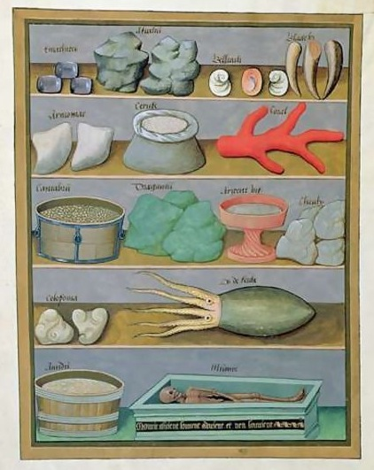

Friday, January the 22nd, 2010
back to: title, date or indexes

The picture above adorns the cover of the latest bestselling paperback by Pebblehead. Entitled Cupboard!, it is a fast-paced and thrill-packed adventure featuring Pebblehead's recurring hero Dax Manley Hopkins, manly, winsome, beguiled and unflappable. Though the cupboard of the title is singular, there are hundreds, possibly thousands of cupboards in the book, some of which Dax opens to take a look inside at crucial moments in the plot. One such is the cupboard the contents of which are shown, neatly arranged, in the picture. It is called the “L Ron” Cupboard, for reasons which Pebblehead never quite makes explicit, unless I am misreading him. God knows it is easy enough to misread Pebblehead. For all the dash and verve of his effortless prose, the effect is sometimes as if one is reading an inept translation from a language if not quite dead, then at least sick and sprawled ungainly upon an invalid's mattress.
The objects in the cupboard are, we are told, made of dough and painted with a coating of emulsion. Each has a function which is utterly baffling, at least to Dax, though he has managed to lay his hands on a set of laminated flash cards giving the name of each item. These names are enigmatic. Here they are:
Top shelf, left to right : 1. Bombs a’ Poe. 2. Luxembourg bales. 3. The Kreutzer Sonata. 4. Yoko Eno Bono.
Second shelf, left to right : 5. Eaten in Harbin. 6. La Condoleezza. 7. Gas giant.
Third shelf, left to right : 8. National Cylinder. 9. Weems. 10. Agony in the garden. 11. Gold Diggers of 1933.
Fourth shelf, left to right : 12. Alone and palely loitering. 13. Thou art Pierre Loti, innit.
Bottom shelf, left to right : 14. Bittern storm over Ulm 15. Yeast fixture.
I will not spoil the bestselling paperback for you by telling you what happens when Dax, so manly and winsome and beguiled and unflappable, first opens, then closes the cupboard. (The scene takes place on pp. 409–444.)
Or, the picture might be by Robinet Testard, an image from Matthaeus Platearius's The Book of Simple Medicine, Ms. Fr. VI n. 1, fol. 166v., c. 1470, St. Petersburg National Library, which I found at Mapping The Marvellous.